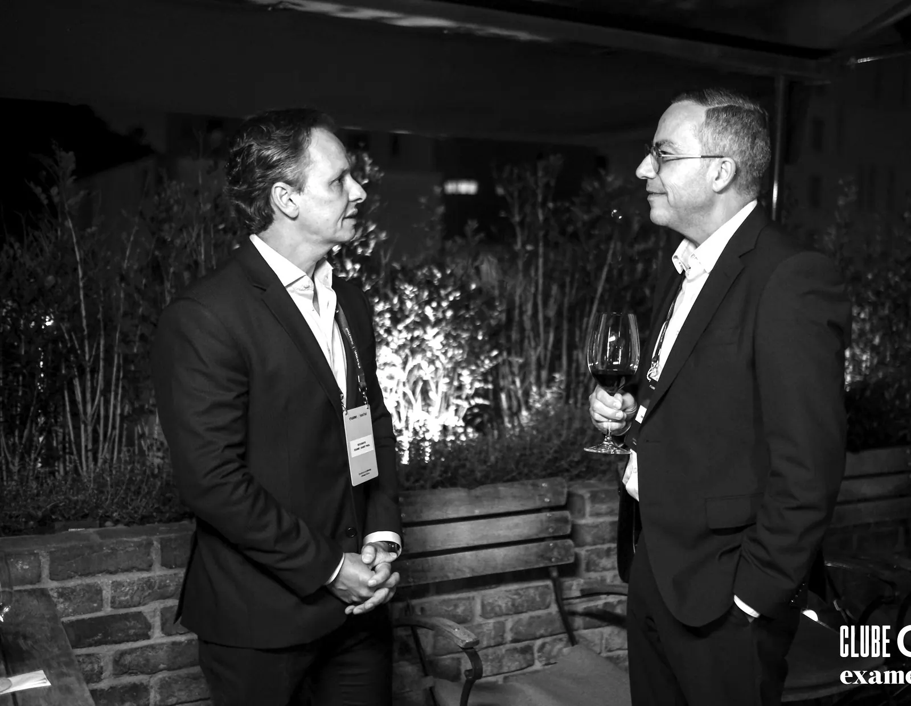

A NR-1 não é um problema jurídico. É um teste de liderança.
Uma palestra para preparar sua liderança para a gestão de riscos psicossociais e saúde mental no trabalho — com quem conduziu essa agenda na prática, à frente de RH de grandes companhias.
Riscos psicossociais deixaram de ser tema de bem-estar. Viraram obrigação.
Com a atualização da NR-1, a gestão de riscos psicossociais entra formalmente no radar de compliance das empresas brasileiras. Mas tratar isso como uma caixa a marcar no jurídico é perder o ponto — e o momento.
Deixou de ser opcional
O risco psicossocial passa a ser identificado, avaliado e gerido como qualquer outro risco ocupacional. A liderança é corresponsável — não só o SESMT.
Compliance não resolve cultura
Um formulário preenchido não muda como as pessoas são lideradas. Sem trabalhar a cultura e o comportamento da liderança, o papel passa, o problema fica.
Quem se antecipa, se diferencia
As empresas que tratarem a NR-1 como agenda de liderança — e não de multa — vão proteger pessoas, reputação e resultado ao mesmo tempo.
Da norma à ação: o que sua liderança sai sabendo fazer
Uma leitura executiva, sem juridiquês e ancorada em dados e casos reais, que conecta a exigência da NR-1 à agenda que realmente muda o ambiente de trabalho: liderança, cultura e saúde mental.
O que a NR-1 realmente pede
O essencial da norma traduzido para a linguagem de negócio e de gente — sem tecnicismo, com clareza sobre o papel da liderança.
Riscos psicossociais na prática
Como reconhecer sobrecarga, assédio, metas tóxicas e falhas de gestão antes que virem afastamento, passivo ou manchete.
Saúde mental é responsabilidade de quem lidera
Por que o comportamento do gestor é a variável que mais pesa no bem-estar da equipe — e o que fazer com isso.
Da conformidade à cultura
O caminho para sair do "cumprir a norma" e chegar a um ambiente psicologicamente seguro que sustenta desempenho.
Consciência, Coragem e Consistência
O framework dos três Cs aplicado à agenda de saúde mental: como transformar intenção em prática que se mantém.
Próximos passos concretos
Um roteiro do que a liderança pode começar a fazer na segunda-feira seguinte — não teoria, movimento.
Não é palestra de quem leu sobre o tema. É de quem liderou.
Kiko Campos passou mais de 20 anos à frente de transformação, cultura e gestão de pessoas em algumas das maiores companhias do país. Ele fala de saúde mental e liderança a partir da cadeira de quem teve de responder por isso — diante de comitês executivos, conselhos e dezenas de milhares de pessoas.
- Diretor Global de RH, Transformação & Cultura na Vale — 170 mil colaboradores, 12 países
- No Carrefour/Grupo BIG, liderou a integração pós-M&A e criou a maior Escola de Liderança do Brasil
- Passagem pela McKinsey (People & Change), com formação internacional em Stanford, Wharton e INSEAD
- LinkedIn Top Voice, Forbes HR Council e duas vezes entre os RHs mais admirados do Brasil
Kiko Campos · Executivo de RH, conselheiro e autor

Do palco à sala de reunião
A palestra se adapta ao seu público e ao seu momento — de um grande evento a uma conversa fechada com o comitê executivo.
Palestra magna
Para convenções, SIPATs e grandes encontros. Uma provocação que coloca a NR-1 e a saúde mental na pauta da liderança.
Imersão de líderes
Formato de trabalho com gestores: do diagnóstico dos riscos psicossociais aos primeiros compromissos práticos.
Conversa executiva
Uma sessão fechada para comitê executivo ou conselho sobre risco, reputação e cultura à luz da NR-1.
Antes de falar comigo
A palestra serve para empresas de qualquer setor?
Sim. A NR-1 e a gestão de riscos psicossociais alcançam toda empresa com colaboradores no Brasil. O conteúdo é adaptado ao seu setor, ao perfil do público e à maturidade da sua liderança.
É presencial ou online?
Os dois. A keynote funciona muito bem em formato presencial e em transmissões corporativas; os formatos de workshop e conversa executiva costumam render mais presencialmente.
O conteúdo é personalizado?
Sempre. Antes do evento, alinhamos objetivos, contexto e as dores específicas da sua liderança para que os exemplos e o encerramento conversem com a sua realidade.
Vocês entregam algo além da palestra?
Quando faz sentido, sim — desde um roteiro de próximos passos para a liderança até desdobramentos de workshop e acompanhamento. Falamos sobre isso na proposta.
Como funciona o investimento?
Depende do formato, do público e do deslocamento. Preencha o formulário com os dados do evento e retorno com uma proposta sob medida.
Coloque a NR-1 na pauta da liderança — antes que ela vire passivo.
Conte sobre o seu evento e retorno com uma proposta sob medida. Se preferir, fale direto comigo.
Falar no WhatsApp ↗ · +55 11 98369-2989
Retorno em breve com uma proposta para o seu evento.